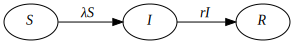

There are many ways to model epidemics, but we can broadly divide
models into two types: macro and micro. Macro models are often also
called compartmental or equation-based, while micro models are often
called agent-based or individual-based simulations.
At the onset of the Covid pandemic, many websites explained how the
simplest useful macro model, an SIR one (for
Susceptible-Infectious-Recovered), worked. We start with that and
then try to implement an equivalent micro model. We then discuss the
differences between the two models and their consequences for
understanding real-world epidemics. Then we implement models of HIV
and Covid and consider what we can learn about these and other
infectious diseases from macro and micro models.
A very simple disease
We start off with a very simple infectious disease. It has the
following characteristics:
A substantial population, at least 100 people, starts off with a
tiny number of infected people, maybe even just one person.
People in this population randomly (homogenously) mix with each
other.
While there are a tiny number of infected people in the
population, they will on average infect two other people before they recover.
Infected people on average take 5 days to recover.
Once recovered, a person has immunity. They can't become
infected again and they can't transmit the infection to anyone else.
Note that no-one dies and there are no births or migration into or
out of this population, at least for the duration that we will model
this disease.
Characteristic 3 of our model is what's commonly called
$\underline{R}_0$ in epidemiological literature. The real-world use
of $\underline{R}_0$ is much more limited than is usually admitted
but it's still useful.
We call our description above a model world. We can implement both a
macro or a micro model version of it.
In this population we have people who are Susceptible to the
infection, but not yet infected. There are infected people, and all
infected people also Infectious. And we have Recovered people.
That's three compartments: Susceptible, Infectious and Recovered, abbreviated as SIR.
We initialize our model so that nearly everyone in the population is
uninfected and has never had the infection. In other words everyone
is in the Susceptible compartment and a tiny number are in the
Infectious compartment.
Let's assume the population size is 100. Then we'll set $S$, the
number of people in the Susceptible compartment to 99 and $I$, the
number of people in the Infectious compartment to 1. The number of
people, $R$, in the Recovered compartment is 0. (Note we do not
underline ${R}$, the number of recovered people, to differentiate it
from $\underline{R}_0$, the number of people that each infectious
person will infect when the epidemic is still very small. I wish
this was a standard adopted throughout infectious disease
literature.)
All the above is common to both the macro and micro models that we
implement. Now let's describe specific details of our macro model:
Macro Model: SIR
We iteratively update the $S$, $I$ and $R$ compartments with the
number of people who have moved between them. In our model each
iteration represents a day in our infectious disease world. These
equations describe what happens on each iteration:
Note that the number of people in our macro model compartments are
continuous real numbers, not discrete. This is a big difference
between our macro and micro models.
The number of people who become infected on each iteration, or day,
of our model is a function of S, I and the risk of infection $\lambda$.
Since all three of these variables change with time, we subscript them.
This equation describes the flow from $S$ to $I$:
\begin{equation}
S_{t+1}=S_t - \lambda_t S_t
\end{equation}
Since people mix homogenously, we have:
\begin{equation} \lambda_t = \beta I_t \end{equation}
where
\begin{equation} \beta = {\underline{R} \over {ND}} \end{equation}
where $N$ is the population size and $D$ is the average number of
days a person is infected (5 in our model).
The other equations in the model are simple:
\begin{equation}
I_{t+1}=I_t + \lambda_t S_t - rI_t
\end{equation}
\begin{equation}
R_{t+1}=R_t + rI_t
\end{equation}
where $r$ is the rate of recovery per day, or $1/5$ in our model.
We can depict what happens on each time step (or day) graphically:

Here is a micro model for SIR
Let's get a bit more complicated. Here there's an exposure
compartment before an infectious one.
Here's the micro model version of SEIR.
Here is the highly cited Granich et al. model.
We can quite easily implement a microsimulation version of this.
Here is a quick and dirty Covid-like-disease model.